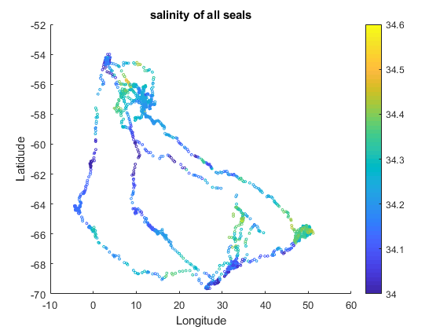
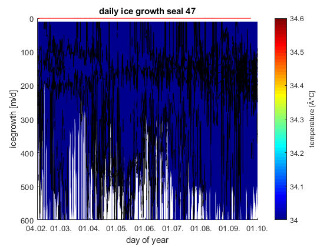
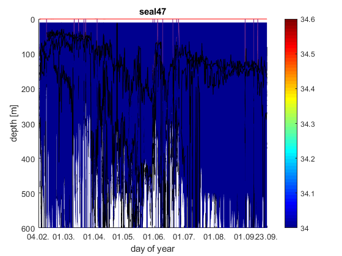
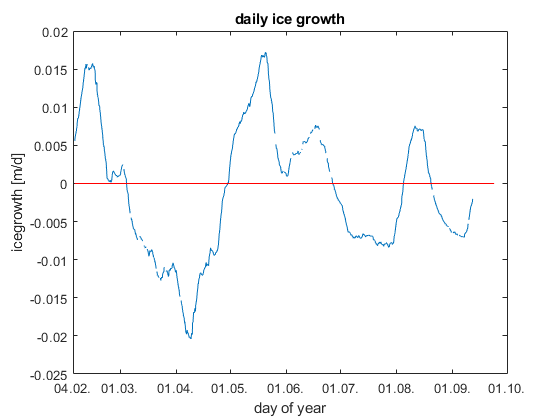
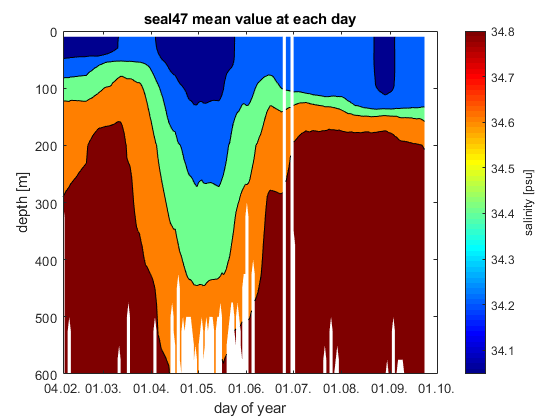

Contents
- date conversion
- video of seal path
- path of seals
- salinity
- temperature
- p color plots
- time frame when seal stayed in one place
- ice formation rate
- ice formation seal 55
- ice formation seal 99
- mixed layer depth
- potential density
- ice formation with ML depth... V_0 replaced with mixed layer depth
- static zone
- smooth
- to do
% group project "Seal data" % Group 2: Heiner Schmidt, Martin Mohrmann, Eleonora van Sitteren % script Heiner %import files load('C:\Users\Heiner\Desktop\Marine Project\BOX1_project\rawdata\seal_47.mat'); date47 = DATE; lat47=LAT; lon47=LON; sal47=SAL; temp47=TEMP; depth47=Z; load('C:\Users\Heiner\Desktop\Marine Project\BOX1_project\rawdata\seal_55.mat'); date55 = DATE; lat55=LAT; lon55=LON; sal55=SAL; temp55=TEMP; depth55=Z; load('C:\Users\Heiner\Desktop\Marine Project\BOX1_project\rawdata\seal_99.mat'); date99=DATE; lat99=LAT; lon99=LON; sal99=SAL; temp99=TEMP; depth99=Z; clear DATE LON LAT SAL TEMP Z; %end import
date conversion
day47=date47-datenum(2008,2,4); day55=date55-datenum(2008,2,7); day99=date99-datenum(2008,2,5); d47=datetime(date47, 'ConvertFrom', 'datenum'); d55=datetime(date55, 'ConvertFrom', 'datenum'); d99=datetime(date99, 'ConvertFrom', 'datenum');
video of seal path
v=VideoWriter('sealpath.avi'); v.FrameRate=10; open(v); t=1; for t=1:length(lon47); scatter(lon47(t),lat47(t)); xlabel('Longitude'); ylabel('Latidude'); zlabel('Depth'); xlim([-5 40]); ylim([-70 -54]); frame=getframe(gcf); writeVideo(v,frame); end close(v); scatter(lon47,lat47, lon55,lat55,lon99,lat99); %path of the seals legend('seal47','seal55','seal99'); title('Seal path');
path of seals
scatter(lon47,lat47,5,day47);
title('seal 47 path');
xlabel('Longitude');
ylabel('Latitude');
h47=colorbar;
ylabel(h47,'days of year');
colormap hsv;
print('C:\Users\Heiner\Desktop\Marine Project\BOX1_project\figures\seal47path','-dsvg');
scatter(lon47,lat47,5,temp47(21,:));
title('seal 47 path');
xlabel('Longitude');
ylabel('Latitude');
h47=colorbar;
ylabel(h47,'temperature at 100m depth');
colormap jet;
print('C:\Users\Heiner\Desktop\Marine Project\BOX1_project\figures\seal47pathtempat100','-dsvg');
scatter(lon55,lat55,5,day55);
title('seal 55 path');
xlabel('Longitude');
ylabel('Latitude');
h55=colorbar;
ylabel(h55,'days of year');
colormap hsv;
print('C:\Users\Heiner\Desktop\Marine Project\BOX1_project\figures\seal55path','-dsvg');
scatter(lon99,lat99,5,day99);
title('seal 99 path');
xlabel('Longitude');
ylabel('Latitude');
h99=colorbar;
ylabel(h99,'days of year');
colormap hsv;
print('C:\Users\Heiner\Desktop\Marine Project\BOX1_project\figures\seal99path','-dsvg');
 salinity
XTickVec=[datenum(2008,2,4),datenum(2008,3:9,1),datenum(2008,9,23)];
contourf(date47,depth47,sal47, 34:0.2:35.5);
set(gca, 'ydir', 'reverse');
ylabel('depth [m]');
xlabel('day of year');
colormap jet;
c=colorbar;
ylabel(c,'salinity [psu]');
title('seal47');
set(gca,'XTick',XTickVec);
datetick('x','dd.mm.','keepticks');
print('C:\Users\Heiner\Desktop\Marine Project\BOX1_project\figures\seal47salinitytime','-dsvg');
XTickVec=[datenum(2008,2,7),datenum(2008,3:10,1),datenum(2008,11,11)];
contourf(date55,depth55,sal55, 34:0.2:35.5);
set(gca, 'ydir', 'reverse');
ylabel('depth [m]');
xlabel('day of year');
colormap jet;
c=colorbar;
ylabel(c,'salinity [psu]');
title('seal55');
set(gca,'XTick',XTickVec);
datetick('x','dd.mm.','keepticks');
print('C:\Users\Heiner\Desktop\Marine Project\BOX1_project\figures\seal55salinitytime','-dsvg');
XTickVec=[datenum(2008,2,5),datenum(2008,3:10,1),datenum(2008,11,17)];
contourf(date99,depth99,sal99, 34:0.2:35.5);
set(gca, 'ydir', 'reverse');
ylabel('depth [m]');
xlabel('day of year');
colormap jet;
c=colorbar;
ylabel(c,'salinity [psu]');
title('seal99');
set(gca,'XTick',XTickVec);
datetick('x','dd.mm.','keepticks');
print('C:\Users\Heiner\Desktop\Marine Project\BOX1_project\figures\seal99salinitytime','-dsvg');
temperature
XTickVec=[datenum(2008,2,4),datenum(2008,3:9,1),datenum(2008,9,23)];
[~,c]=contourf(date47,depth47,temp47, -2:0.5:2);
set(gca, 'ydir', 'reverse');
ylabel('depth [m]');
xlabel('day of year');
colormap jet;
c.LineWidth=0.1;
c=colorbar;
ylabel(c,'temp [°C]');
title('seal47');
set(gca,'XTick',XTickVec);
datetick('x','dd.mm.','keepticks');
print('C:\Users\Heiner\Desktop\Marine Project\BOX1_project\figures\seal47temptime','-dsvg');
XTickVec=[datenum(2008,2,7),datenum(2008,3:10,1),datenum(2008,11,11)];
[~,c]=contourf(date55,depth55,temp55, -2:0.5:2);
set(gca, 'ydir', 'reverse');
ylabel('depth [m]');
xlabel('day of year');
colormap jet;
c.LineWidth=0.1;
c=colorbar;
ylabel(c,'temp [°C]');
title('seal55');
set(gca,'XTick',XTickVec);
datetick('x','dd.mm.','keepticks');
print('C:\Users\Heiner\Desktop\Marine Project\BOX1_project\figures\seal55temptime','-dsvg');
XTickVec=[datenum(2008,2,5),datenum(2008,3:10,1),datenum(2008,11,17)];
[m,c]=contourf(date99,depth99,temp99, -2:0.5:2);
set(gca, 'ydir', 'reverse');
ylabel('depth [m]');
xlabel('day of year');
colormap jet;
c.LineWidth=0.1;
c=colorbar;
ylabel(c,'temp [°C]');
title('seal99');
set(gca,'XTick',XTickVec);
datetick('x','dd.mm.','keepticks');
print('C:\Users\Heiner\Desktop\Marine Project\BOX1_project\figures\seal99temptime','-dsvg');
p color plots
pcolor(day47,depth47,temp47);
shading interp;
set(gca, 'ydir', 'reverse');
ylabel('depth [m]');
xlabel('day of year');
title('seal47');
c=colorbar;
ylabel(c,'temperature [°C]');
pcolor(day55,depth55,temp55);
shading interp;
set(gca, 'ydir', 'reverse');
ylabel('depth [m]');
xlabel('day of year');
title('seal55');
c=colorbar;
ylabel(c,'temperature [°C]');
pcolor(day99,depth99,temp99);
shading interp;
set(gca, 'ydir', 'reverse');
ylabel('depth [m]');
xlabel('day of year');
title('seal99');
c=colorbar;
ylabel(c,'temperature [°C]');
time frame when seal stayed in one place
%seal 47 start 98.24 end: 150.38 day47(219); day47(400); %seal 55 start: 143.61 end: 210.67 day55(355); day55(565); %seal 99 start 35.17 end: 275.56 day99(1); day99(665);
ice formation rate
%seal 47 rho_0=1027; %kg m-3 rho_i=920; %kg m-3 S_i=10; %psu h_0=100; %m S_0=sum(sal47(3:21,250:260)); %salinity from date250 to date350 S_f=sum(sal47(3:21,350:360)); h_i = (rho_0*h_0*S_0-rho_0*h_0*S_f)/(rho_i*S_i-rho_0*S_f); %net ice formation rate over the time frame h_id = h_i/(date47(350)-date47(250)); %ice formation rate by day clear h_if h_if=zeros(1,length(lon47)-30); for t=1:(length(date47)-30) S_0=sum(sal47(3:21,t)); S_f=sum(sal47(3:21,t+30)); h_if(t) = ((rho_0*h_0*S_0-rho_0*h_0*S_f)/(rho_i*S_i-rho_0*S_f))/(date47(t+30)-date47(t)); end plot(date47(1:length(date47)-30),h_if); %daily ice growth (difference between day t and day t+30) line([date47(1) date47(length(date47))], [0 0], 'color','r'); XTickVec=[datenum(2008,2,4),datenum(2008,3:10,1)]; ylabel('icegrowth [m/d]'); xlabel('day of year'); set(gca,'XTick',XTickVec); datetick('x','dd.mm.','keepticks'); title('daily ice growth'); print('C:\Users\Heiner\Desktop\Marine Project\BOX1_project\figures\seal47icegrowth','-dsvg')
ice formation seal 55
rho_0=1027; %kg m-3 rho_i=920; %kg m-3 S_i=10; %psu h_0=100; %m clear h_if for t=1:(length(date55)-30) S_0=sum(sal55(3:21,t)); S_f=sum(sal55(3:21,t+30)); h_if(t) = ((rho_0*h_0*S_0-rho_0*h_0*S_f)/(rho_i*S_i-rho_0*S_f))/(date55(t+30)-date55(t)); end plot(date55(1:length(date55)-30),h_if); %daily ice growth (difference between day t and day t+30) line([date55(1) date55(length(date55))], [0 0], 'color','r'); XTickVec=[datenum(2008,2,4),datenum(2008,3:10,1)]; ylabel('icegrowth [m/d]'); xlabel('day of year'); title('seal55 - daily ice growth as difference between time frame t and t+30'); set(gca,'XTick',XTickVec); datetick('x','dd.mm.','keepticks'); title('seal47 - daily ice growth as difference between time frame t and t+30'); set(gca,'XTick',XTickVec); datetick('x','dd.mm.','keepticks');
ice formation seal 99
rho_0=1027; %kg m-3 rho_i=920; %kg m-3 S_i=10; %psu h_0=100; %m clear h_if for t=1:(length(date99)-30) S_0=sum(sal99(3:21,t)); S_f=sum(sal99(3:21,t+30)); h_if(t) = ((rho_0*h_0*S_0-rho_0*h_0*S_f)/(rho_i*S_i-rho_0*S_f))/(date99(t+30)-date99(t)); end plot(date99(1:length(date99)-30),h_if); %daily ice growth (difference between day t and day t+30) line([date99(1) date99(length(date99))], [0 0], 'color','r'); XTickVec=[datenum(2008,2,4),datenum(2008,3:10,1)]; ylabel('icegrowth [m/d]'); xlabel('day of year'); title('seal99 - daily ice growth as difference between time frame t and t+30'); set(gca,'XTick',XTickVec); datetick('x','dd.mm.','keepticks'); clear rho_0 rho_i S_i S_0 S_f h_0
mixed layer depth
Seal data project MAR440 HT-18 Eleonora Van Sitteren Group 2
Z_matrix = zeros(length(depth47),length(lon47)); for i=1:length(lon47) Z_matrix (:,i) = depth47; end LAT_row = lat47; LAT_matrix = zeros (length(47),length(lon47)); for o=1:length(depth47) LAT_matrix (o,:) = LAT_row; end P = z2p80(Z_matrix,LAT_matrix); %gives the pressure P (dbars) at a depth D (m) at some latitude LAT (degrees). [SPV,K,SterAn] = alpha(P,temp47,sal47); PTEMP = theta(P,temp47,sal47); %is the local potential temperature % at reference pressure P0 using Bryden 1973 polynomial for % adiabatic lapse rate and Runge-Kutta fourth order integration % algorithm. sig = sigma(P,temp47,sal47,1); % SIGMA Density of Seawater % % SIG = SIGMA( P , T , S , [Pref] ) % % computation of density of seawater % referenced to arbitrary pressures % based on 'alpha.m' % % input : P : pressure [dbar] % T : in situ temperature [degC] IPTS-68 % S : salinity [psu] IPSS-78 % Pref [p] : optional reference pressure % use: SIGMA(Pref,THETA(P,T,S,Pref),S) % % output : SIG : density of seawater at pressure P (adiabatic) % [kg/m^3] t = datestr(date47); % makes dates in characters out of the MATLAb format dates in DATE. g = gravit (LAT_matrix); [ssp,info] = snd_spd(P,temp47,sal47,'del grosso',LAT_matrix); % 2) SND_SPD(P,T,S,'del grosso',lat) returns the sound speed (m/sec) % given vectors of salinity (ppt), temperature (deg C), and % PRESSURE (dbar) using the Del Grosso equation: % % Del Grosso, "A New Equation for the speed of sound in Natural % Waters", J. Acoust. Soc. Am. 56#4 (1974). dsig = diff (sig); dz = diff (Z_matrix); dp = diff (P); N2 = (-g(1:length(depth47)-1,:)./sig(1:length(depth47)-1,:)).*(dsig./dz-1./(ssp(1:length(depth47)-1,:).^2).*dp./dz); [Y,I] = min(N2); mixed_depth = zeros (1,length(lon47)); for h=1:length(lon47) mixed_depth (h) = Z_matrix(I(h)); end XTickVec=[datenum(2008,2,4),datenum(2008,3:9,1),datenum(2008,9,23)]; contourf(date47,depth47,sal47, 34:0.2:35.5); set(gca, 'ydir', 'reverse'); ylabel('depth [m]'); xlabel('day of year'); colormap jet; c=colorbar; ylabel(c,'salinity [psu]'); title('seal47'); set(gca,'XTick',XTickVec); datetick('x','dd.mm.','keepticks'); hold plot(date47,mixed_depth,'LineWidth',1.5,'color','m'); print('C:\Users\Heiner\Desktop\Marine Project\BOX1_project\figures\mixedlayer+sal47','-dsvg'); close plot(date47,mixed_depth); set(gca, 'ydir', 'reverse'); ylabel('depth [m]'); xlabel('day of year'); title('seal47'); set(gca,'XTick',XTickVec); datetick('x','dd.mm.','keepticks'); print('C:\Users\Heiner\Desktop\Marine Project\BOX1_project\figures\mixedlayer','-dsvg');
Current plot held
potential density
d0_47=sw_dens0(sal47,temp47); contourf(date47,depth47,d0_47, 1027:0.05:1028); % shading interp colorbar; ml47=zeros(1,length(lon47)); clear t u; for t=1:length(lon47) for u=3:length(depth47) if depth47(u) not 'NaN'; if +d0_47(u,t)-d0_47(3,t)>0.02; ml47(t)=depth47(u); break end end end end XTickVec=[datenum(2008,2,4),datenum(2008,3:9,1),datenum(2008,9,23)]; plot(date47,ml47); % mixed layer depth set(gca, 'ydir', 'reverse'); ylabel('depth [m]'); xlabel('day of year'); title('seal47'); set(gca,'XTick',XTickVec); datetick('x','dd.mm.','keepticks'); print('C:\Users\Heiner\Desktop\Marine Project\BOX1_project\figures\mixedlayer_dens0','-dsvg');
ice formation with ML depth... V_0 replaced with mixed layer depth
%seal 47 rho_0=1027; %kg m-3 rho_i=920; %kg m-3 S_i=10; %psu % S_0=sum(sal47(3:21,250:260)); %salinity from date250 to date350 % S_f=sum(sal47(3:21,350:360)); % h_i = (rho_0*mixed_*S_0-rho_0*h_0*S_f)/(rho_i*S_i-rho_0*S_f); %net ice formation rate over the time frame % h_id = h_i/(date47(350)-date47(250)); %ice formation rate by day clear h_if for t=1:(length(date47)-30) S_0=sum(sal47(3:21,t)); S_f=sum(sal47(3:21,t+30)); h_if(t) = ((rho_0*mixed_depth(t)*S_0-rho_0*mixed_depth(t)*S_f)/(rho_i*S_i-rho_0*S_f))/(date47(t+30)-date47(t)); end plot(date47(1:length(date47)-30),h_if); %daily ice growth (difference between day t and day t+30) line([date47(1) date47(length(date47))], [0 0], 'color','r'); XTickVec=[datenum(2008,2,4),datenum(2008,3:10,1)]; ylabel('icegrowth [m/d]'); xlabel('day of year'); title('ice formation rate seal 47. h_0 = mixed layer depth'); set(gca,'XTick',XTickVec); datetick('x','dd.mm.','keepticks'); clear rho_0 rho_i S_i S_0 S_f h_0
static zone
%dates 219-400 figure(2); hold off; XTickVec=[datenum(2008,4:6,1)]; contourf(date47(219:400),depth47,d0_47(:,219:400),1027:0.05:1028); set(gca, 'ydir', 'reverse'); ylabel('depth [m]'); xlabel('day of year'); colormap jet; c=colorbar; ylabel(c,'potential density [kg m-3'); title('seal47'); set(gca,'XTick',XTickVec); datetick('x','dd.mm.','keepticks'); hold; plot(date47(219:400),ml47(219:400),'color','r');
Current plot held
smooth
sal47s=smooth2a(sal47,1 ,100); %entered matrix, number of rows, number of columns subplot(1,2,1); contourf(date47,depth47,sal47,34:0.2:35.5); colorbar; caxis([34 35.5]); hold on subplot(1,2,2); contourf(date47,depth47,sal47s,34:0.2:35.5) colorbar; caxis([34 35.5]); hold off close; rho_0=1027; %kg m-3 rho_i=920; %kg m-3 S_i=10; %psu h_0=100; %m for t=1:(length(date47)-30) S_0=sum(sal47s(3:21,t)); S_f=sum(sal47s(3:21,t+30)); h_if(t) = ((rho_0*h_0*S_0-rho_0*h_0*S_f)/(rho_i*S_i-rho_0*S_f))/(date47(t+30)-date47(t)); end plot(date47(1:length(date47)-30),h_if); %daily ice growth (difference between day t and day t+30) line([date47(1) date47(length(date47))], [0 0], 'color','r'); XTickVec=[datenum(2008,2,4),datenum(2008,3:10,1)]; ylabel('icegrowth [m/d]'); xlabel('day of year'); set(gca,'XTick',XTickVec); datetick('x','dd.mm.','keepticks'); title('daily ice growth'); clear rho_0 rho_i h_0
to do
interpolate data overlay map with lat/lon data Sea ice modelling(FESOM) [Timmermann R, Danilov S, Schröter JA (2006) Geophys Res Abstr 8:07063] When calculating Ice growth NaN is treated as zeroes